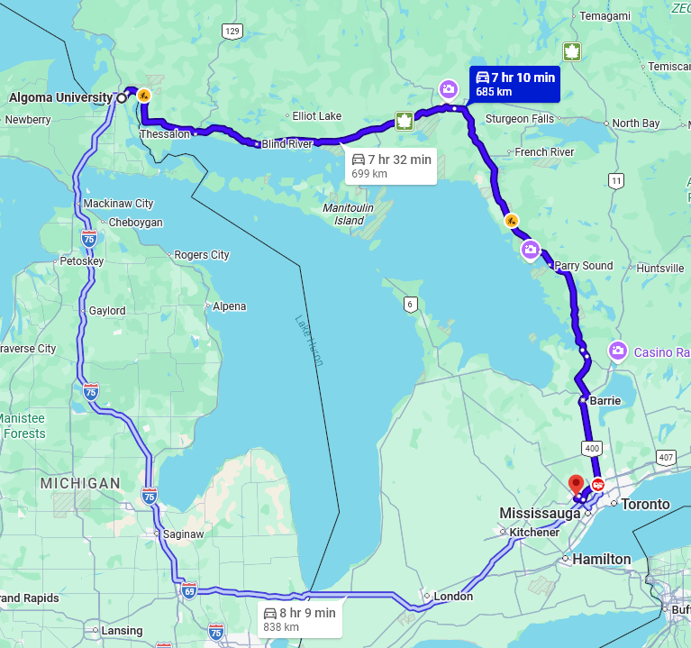
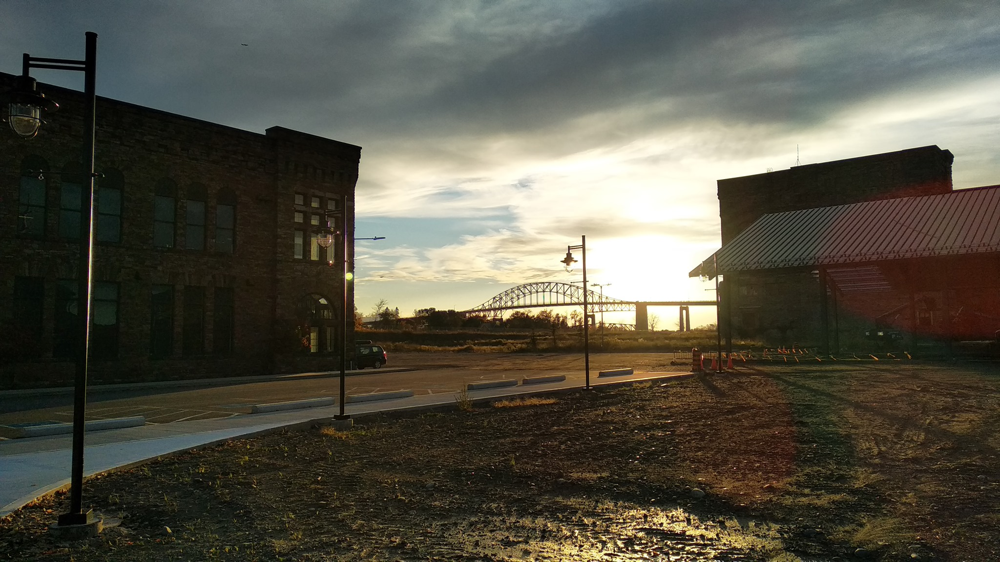

Preamble
Algoma University has multiple campuses in multiple areas of Ontario, Canada. As such, knowing where the university is located can be difficult. Furthermore, Sault Ste. Marie is also an international city with two sections in two different countries. Therefore, this guide has been prepared to help with those who wish to visit R2/C2 or Prof. Hu, and prospective students who are thinking about moving into the area.
Algoma University Campuses
Algoma University has multiple campuses in the following cities in the Province of Ontario, Canada:
- Sault Ste. Marie: This is the main campus of the university, and it is where most of the programs are provided. The campus is considered to be a rural one. Prof. Hu and R2/C2 are based here.
- Brampton: Although the campus has less programs than the Sault Ste. Marie campus, it still provides multiple graduate programs. The campus is located in the suburb of Toronto.
- Other Campuses: The university also has presence in Timmins and Thunder Bay. These campuses provide a small number of programs that serve specific communities.
To put things in perspective, below is the driving map from the main Sault Ste. Marie campus to the Brampton campuses. As one can see, the driving distance is around 685 km.

For any prospective visitor, they should be mindful when planning an in-person trip. Please read the address carefully. And for a prospective student, they should ask themselves several questions:
- What are the available programs of study?: Different campuses have different program offerings. While the Sault Ste. Marie and the Brampton campuses have similar programs in computer science, they are not identical.
- Where are the supervisor?: Exchange and graduate students should be based in the city where their supervisors are working. Both the Sault Ste. Marie and the Brampton campuses can host exchange students and offer thesis-based graduate programs in computer science.
- Where do they want to live?: Sault Ste. Marie and Brampton are very different cities. While the cost of living in Sault Ste. Marie is lower, Brampton is closer to Toronto. This means a Brampton student will have better access to services and transportation.
If Sault Ste. Marie is the city of interest, then please read on.
Sault Ste. Marie (Baawaating)
First, it is important to know that while Sault Ste. Marie (aka. Baawaating) has a French name, it is neither in France nor in Quebec. Rather, it is located across St. Marys River. Each side of the city lies in a different country; the southern side is in the United States of America while the nothern side is in Canada. Therefore, visiting the different side of the city requires proper travel documents.
Since Algoma University is located on the Canadian side, a prospective international visitor or a prospective international student will need appropriate documents to reside in Canada.
